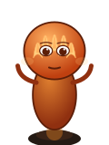
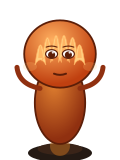
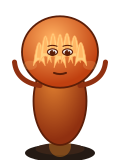
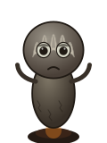
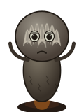

Shared stages (1–5)
Erstes Glühen
Das Flämmchen
Die Feuerseele
Der Lohgeist
Path A (a1–a5)
Helle Flamme
Der Flammentänzer
Die Feuerkrone
Der Phönixgeist
Strahlender Phönix
Path B (b1–b5)
Das Herdlicht
Der Kaminwächter

Die Glutseele
Die Uralte Kohle
Der Herdälteste
Path C (c1–c5)
Der Erlöschende

Der AschgraueDer Rauchwandler

Der Aschendorn